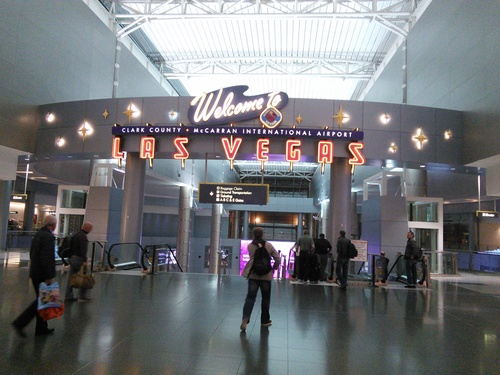

Do Ameriky
Sice se naše cesty do vánoc rozdělily, ale já sem asi stejně budu psát, co mě potkalo a budu doufat, že Zuzejk to tady bude prokládat zase tím, co potkalo ji.

V rámci výletu za druhou půlkou firmy v San Franciscu mě v práci poslali na konferenci AWS re:Invent a ta se odehrává v Las Vegas. Takže jsem poprvé letěl takhle daleko, poprvé do Ameriky, poprvé v Las Vegas, které znám jenom z filmů.
Vstával jsem ve čtyři ráno, rozloučil se se svou milovanou a vyrazil na Ruzyň. Tam mě čekala dost dlouhá fronta, na jejímž konci mi vysvětlili, jak budu procházet pohovorem pro vstup do USA a jak budu clít batoh. Pak jsem letěl do Frankfurtu, pak do Atlanty a pak do Vegas.
Let do Frankfurtu byla vlastně nuda. Ve Frankfurtu mě akorát museli prolustrovat, aby zjistili, jestli se chci z USA někdy ještě vrátit a co že tam jedu dělat. Nejsem zastánce tisku nějakých dokumentů, když si stačí opsat pár čísel na papír, takže jsem neměl vytištěnou zpáteční letenku. To se ukázalo jako velká chyba a mým trýznitelům to přidalo na nevídané přísnosti. Zpáteční let nemohli navíc najít v systému, protože zpět letím s KLM a ne s Deltou. Nakonec jsme se ale nějak domluvili a pán mouřenín na přepážce mě ještě vyprovodil s lámanou češtinou a vtípky o tom, že “vraciš na vanoce jo?”
Další “sranda” byla s letem do Atlanty. I přesto, že prý je Delta nejlepší, tak pohodlné to moc nebylo (o dost méně místa než evropské “hodinové” lety), připadal jsem si dost skrčený. Navíc jsem seděl uprostřed mezi dvěma dalšíma lidma. Trvalo to pak už strašně dlouho, byl jsem unavený a spánkově deprimovaný (spát se mi moc nedařilo). Zase jsem ale ke konci zjistil, že vedle mě letí Čech, dokonce se služebním pasem, ale předmět jeho služby raději prozrazovat nebudu, aby mě nehonili tajní agenti. Už od začátku mi přišel tak nějak jako Čech. Asi protože tam popíjel podávané víno (což jsem od něj odkoukal a praktikoval to na zkrácení času), pivo a whisky s velkou náruživostí.
Další zajímavosti: Letělo se skoro kolem Grónska a tak. Cestoval jsem proti času, takže jsem přiletěl ve tři odpoledne, zatímco doma bylo asi devět večer. První osoba, kterou jsem v Atlantě potkal, byla zaměstnankyně letiště, která na nás promluvila česky a později se svěřila, že je původně z Liberce.
Jinak v letadlech a na letištích jsem prakticky nic nefotil, protože mi tam nepřišlo nic zajímavého a byl jsem z toho všeho spíš unavený.
V Atlantě mě už bolela hlava a nic se mi už nechtělo, ale čekal mě ještě další let, čtyřhodinový. Ten se mi podařilo víceméně nějak protrpět a prospat. Zajímavé bylo, že skoro vše, co jsem dostal v minulém letu zadarmo, včetně sluchátek, se zde platilo. Do Vegas jsem dorazil v šest večer, přičemž venku je úplná tma, ale asi 25°C. Jsem zvědavý, jaké to tu bude ve dne. Měl jsem domluvené vyzvednutí od pana domácího (bydlím přes Airbnb) a ten říkal, že zima ještě nezačala, ale léto už je pryč, takže má být nejlepší počasí - teplo, ale ne vedro (Vegas je uprostřed pouště).
Jinak na letišti mě zaujalo, že hned co člověk vystoupí z letadla, tak kolem něj všechno bliká a první co bylo vidět, byly automaty přímo na letišti :-D Hollanův ráj.
Nuže, nechám se překvapit, co bude. Jsem ve Vegas, za barákem mám letiště, kousek od toho je pověstný “strip” s kasíny a zrovna jsem si přečetl, že konference se odehrává v jednom z nich. V tom, co “vypadá jako Benátky”:

(Tohle jsem nefotil, to jsem vygooglil.)
Takže to ještě bude asi zajímavé :-D Dobrou noc! Nebo tedy vám v ČR a mému biorytmu asi spíš něco jako dobré ráno.